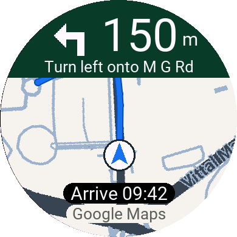
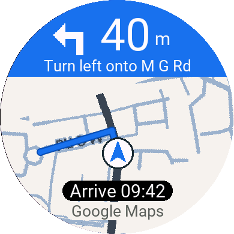
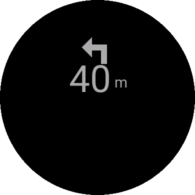

For your Garmin
NavMap
The map, the next turn and a heads-up on your wrist.
$1 planned one-time price
lifetime access to the watch app
Coming to Connect IQ
The direct store link will appear here when the listing is published.
Google Maps for your Garmin
Your familiar Google Maps directions, brought to your Garmin. Keep your phone in your pocket and the road in view.

19 Garmin modelsFind your watch
Made for AndroidAndroid 8.0 or newer
Your Google Maps keySet it up once
Built in the openExplore the source
A map when you need the bigger picture.
A clear cue when it’s time to turn.

Live map view Actual simulator screenshot

Approaching your turn Actual simulator screenshot

Between the turns Actual simulator screenshot
Made for a glance

Pick a place in Google Maps. Let NavBridge bring the directions to your watch.
Share your destination to Navigate with NavMap for the route line. Take another road and NavBridge recalculates it.
No location history. No data sent to NavMap’s makers. Maps and routes use your own Google key, with your consent.
Read our privacy policyFind your fit
Made for these 19 Garmin AMOLED watches.
Pair yours with an Android phone and Garmin Connect.
Android 8.0+ with Google Maps and Garmin Connect required. iPhone and MIP watches, including fēnix 7, Forerunner 255/955 and Instinct, are not supported. Only the models listed here are supported.
NavMap lives on your watch.
NavBridge connects it to your phone.
Install NavBridge on Android. Get NavMap from Connect IQ when the listing is live, or build the watch app from source.
Enable Maps Static API and Routes API in your Google Cloud project. Add the key in NavBridge and review the permissions.
Open both apps to pair. In Google Maps, share a destination to Navigate with NavMap for turns and a route line.
One watch app. One free companion.
Your familiar Google Maps.
The map, the next turn and a heads-up on your wrist.
$1 planned one-time price
lifetime access to the watch app
The direct store link will appear here when the listing is published.
The bridge between Google Maps and your Garmin. Pair, add your key and go.
Free Android companion
Android 8.0 or newer
A note on map costs. Maps and routes use your own Google Cloud key. Billing must be enabled; Google’s monthly free usage caps apply. Usage beyond those caps is billed separately. Check Google’s current pricing.
Prefer to build it yourself? Get the source and build guide. Prebuilt watch packages are not offered here.
NavBridge requires Android 8.0 or newer and access to Google Maps navigation notifications. There is no iOS companion, so NavMap does not currently support iPhones.
You need your Android phone with you, connected to the watch through Garmin Connect. Google Maps handles navigation on the phone; NavMap displays the directions on your wrist.
New map images and rerouting need internet. Turn guidance can continue while Google Maps is still providing navigation notifications, and a route already received by the watch can still be drawn. Keep the phone connected to the watch.
Open a destination in Google Maps, tap Share, then choose Navigate with NavMap. Starting with Google Maps’ regular Start button provides turn directions but does not share the route. Your key also needs Routes API enabled.
Garmin limits how long a Connect IQ app can keep the display bright. NavMap switches to a simple arrow and distance when dimmed. For longer trips, open NavMap from the watch’s app list before starting Google Maps; opening from the phone prompt can time out after about two minutes.
No. NavMap is a navigation display, not an activity recorder. It does not keep a location history. When navigation finishes, it shows “Arrived” and closes.